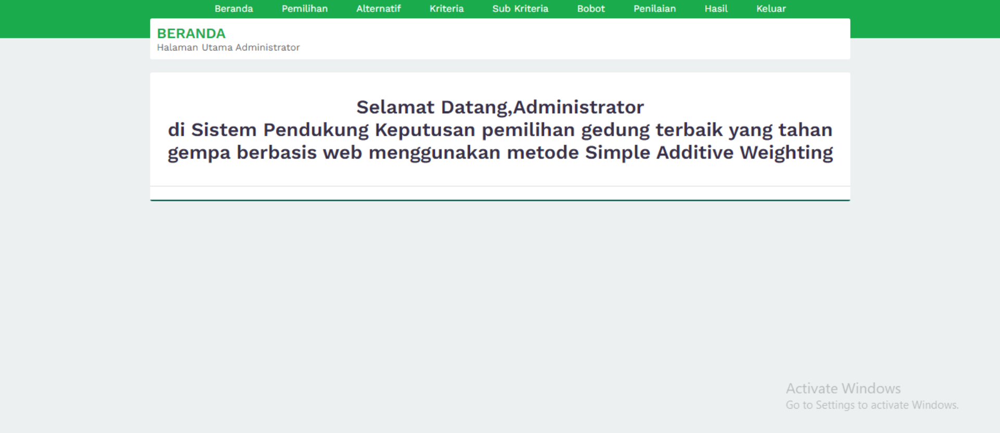

Personal Website
Personal website menggunakan bahasa HMTL dan CSS tanpa bantuan framework
BMI calculator
Body Mass Index (calculator) dengan logika javascript

Landing page
Landing page dari project berdasarkan challenge dengan tema lingkungan

Perancangan Sistem Pojok Konsultasi
Perancangan Sistem Pojok Konsultasi ini ditujukan kepada Biro Organisasi Setda Provinsi Sumatera Barat dan dibuat untuk memenuhi tugas Kerja Praktik

Pembangunan SPK Gedung Tahan Gempa
Pembangunan Sistem Pendukung Keputusan dalam menentukan gedung yang tahan gempa di Kota Padang menggunakan metode SAW, dibuat untuk memenuhi Tugas Besar pada mata kuliah SPK